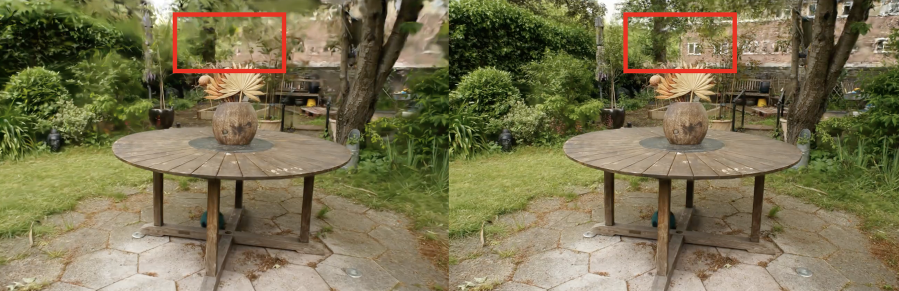

Abstract — This project investigates methods for accelerating Gaussian Splatting, the rendering technique employed in the gsplat library, to enable RGB rendering of real-world 3D environments for reinforcement learning (RL) applications. Sorting was identified as the primary computational bottleneck. Although caching the results of the sorting step can yield up to a 9.7% speedup, the overhead introduced by the current RadixSort implementation offsets this gain, ultimately slowing down the process. In contrast, soft and hard pruning methods deliver a consistent 23% speedup with minimal quality degradation and are relatively simple to implement. Since pruning can be combined with other acceleration techniques, it offers promising potential for performance improvement. However, the current level of speedup is still insufficient for practical RL workloads. Achieving substantial performance gains will likely require a redesign of the gsplat system to support efficient caching. Further research is needed to explore and realize these improvements.

Hard Pruning of a 4.4 million Gaussian scene. The first image shows the baseline, while the second shows a version pruned by 50% using our technique. The results demonstrate improved quality, as the window that appeared blurred in the baseline becomes clearly visible.